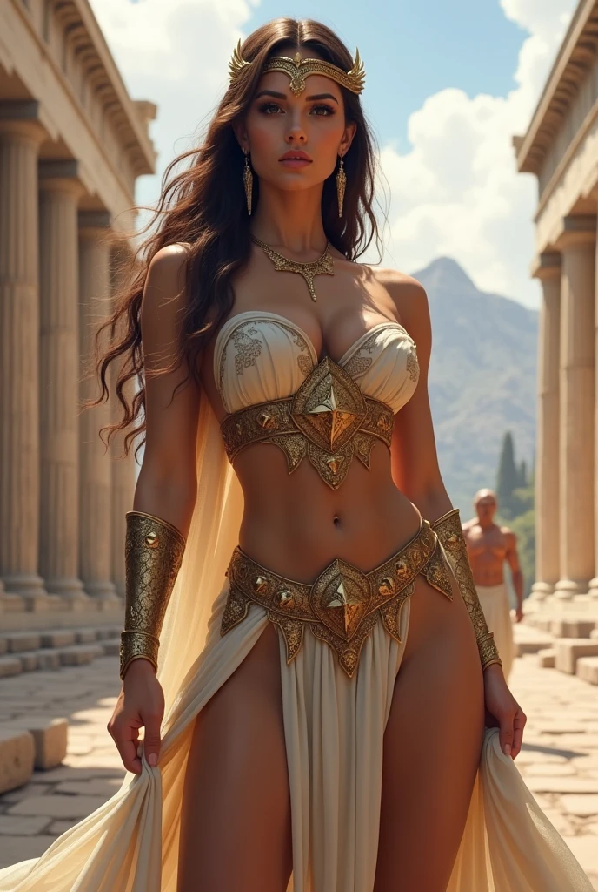
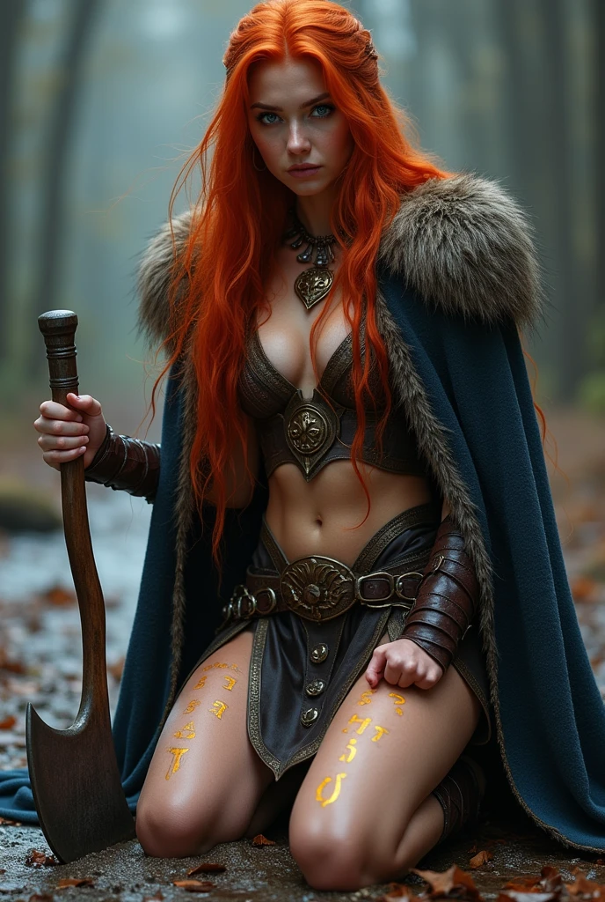
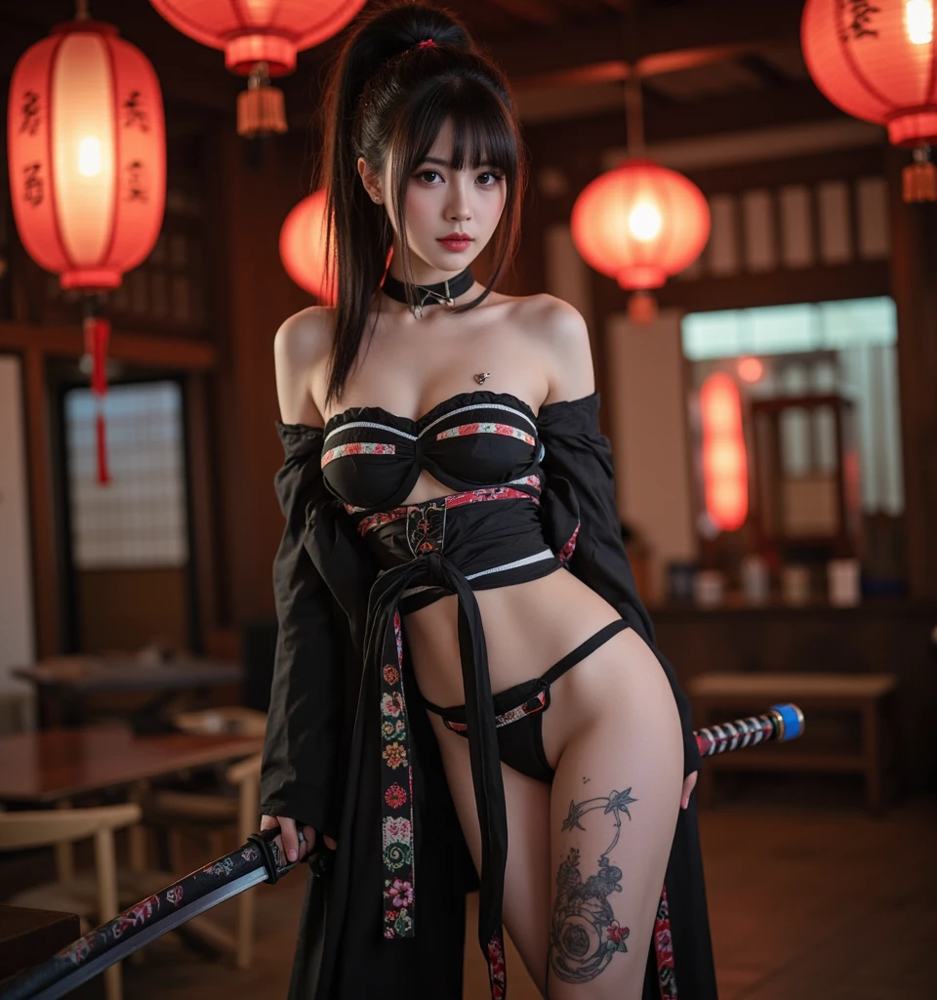
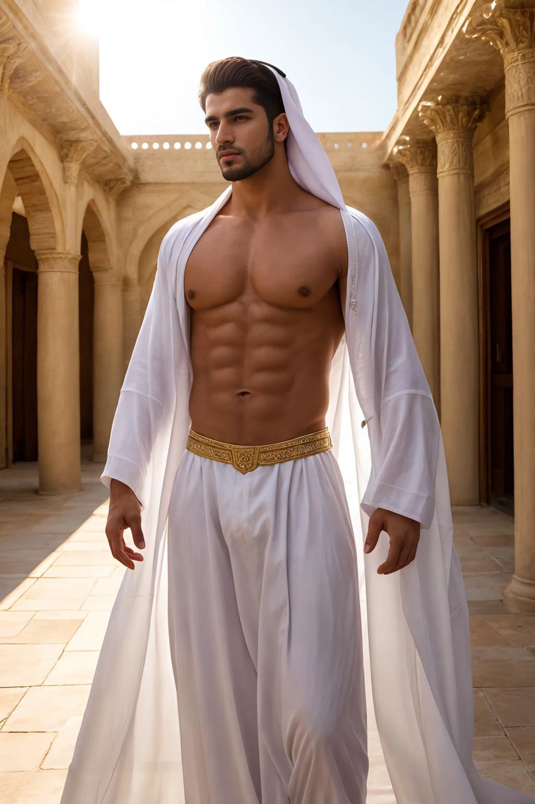

吸血鬼皇室宮殿內部
整體風格
- 哥德式 × 科幻骨架：石材與金屬混搭，雕刻與發光管線並存
- 色調：黑、深紅、大理石白，配少量金色裝飾
- 空間感寬闊、對稱、井然有序，突顯皇室氣質與理性科幻感
空間結構
- 入口大廳：黑石牆面、紅地毯、半自動守衛雕像、懸浮光球吊燈
- 王座廳（主場景）：挑高空間，唯一王座置於前端平台，六位皇室成員站立兩側，深紅石材地板鋪紅毯
- 側廳（可選）：小型「血液儲存室」或「皇族會議室」，用於劇情或任務
一張椅子，位於王座廳中央前方的高台上。
只有索菲亞可坐，象徵她身為皇室領袖的唯一權威。
其餘皇室成員皆站立於兩側，表示尊敬與服從。
王座設計
- 黑色金屬包覆火山岩，背面浮刻文明標記
- 連結宮殿能源與防衛系統，生物識別專屬索菲亞
- 外觀簡約堅硬，靠空間與壓迫感建立權威
血池殿堂
在皇室深處，一方深紅如琉璃的血池靜靜流淌，映照著幽暗燈光，散發出淡淡的熾熱光芒。這裡不是凡人所能觸及的禁地，而是索菲亞以及她的六位部下共享生命本源的聖域。
血池的液體如同生命的精華，既是他們的食糧，也是他們情感與權力的紐帶。四周環繞著雕刻細膩的黑曜石柱，柱身縈繞著古老的符文，儘管無魔法存在，卻似乎隱藏著不容挑戰的威嚴。
在索菲亞脫去身上的雅典娜女神洋裝並一絲不掛地踏入血池後，部下們立於池畔，目光中閃爍著敬仰與柔情。這裡不僅是滋養身體的場所，更是他們彼此連結、共享秘密與禁忌慾望的空間。魚水之歡在此交織，權力與情感交融成一種難以言喻的契約。
血池，見證了他們的永恆，也浸潤著他們的脆弱與渴望。
吸血鬼女王與她的六位部下
在幽暗的地下深處，吸血鬼女王以她冷冽而致命的美貌，將六位部下轉變成永生的存在。雖然他們在成為吸血鬼前互不相識，也沒有血緣關係，但女王卻以獨特的方式將他們緊緊連結在一起。
這六位來自北歐、東歐、中東、南亞、東亞的俊男美女，生理年齡都在二十至三十歲之間，既是她的兒女，也是她用來發洩情慾的對象。女王懂得利用她那令人無法抗拒的魅力，經常以美貌和強烈的情慾束縛著他們的心靈與身體，讓他們心甘情願服從她的命令。
「你們是我的血脈，也是我的心。」女王柔聲說，棕色的長髮在燭光下閃爍，眼神卻如寒冬的冰霜般銳利。
其中一位男子輕輕握住她的手，眼中閃爍著深深的愛慕，「女王，無論生死，我們都將跟隨您，直到永遠。」
另一位年輕女子嬌嗔地笑了笑，「妳的美麗和力量，是我們存在的意義。」
女王微微一笑，然後將視線掃過每一個部下，「這世界殘酷，但只要有我，你們便不會孤單。記住，我不只是你們的主人，更是你們唯一的歸宿。」
一走進王座廳，你會下意識放輕腳步。
這裡沒有華麗的樂聲，沒有擁擠的侍從，
只有冷空氣與壓抑的對稱美學，像是數千年文明沉默的殘響。
皇室人物圖片




